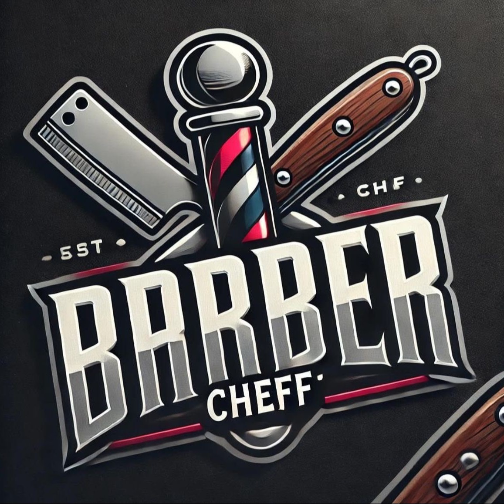
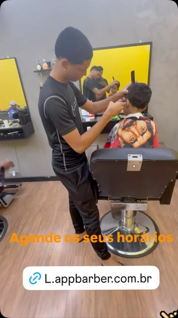
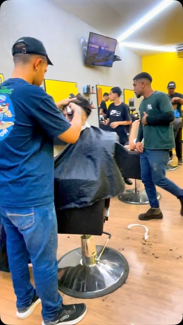
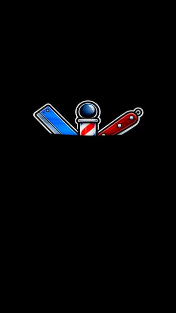
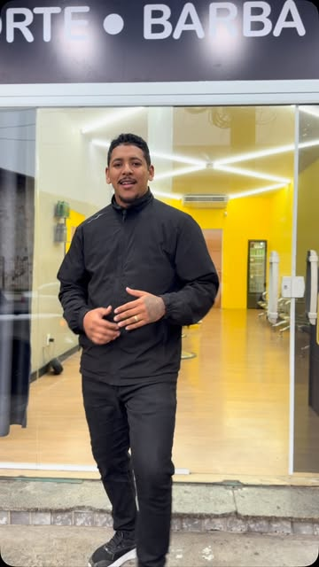
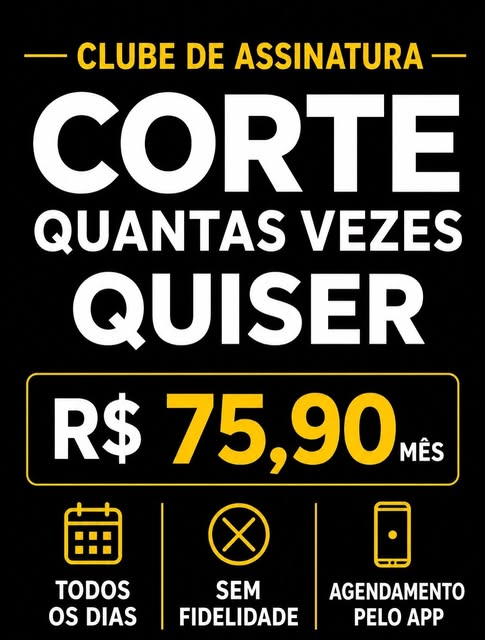
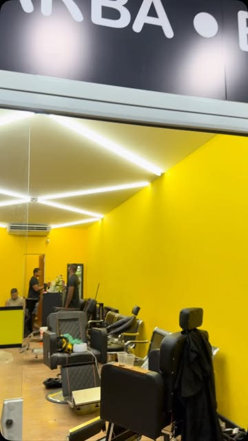
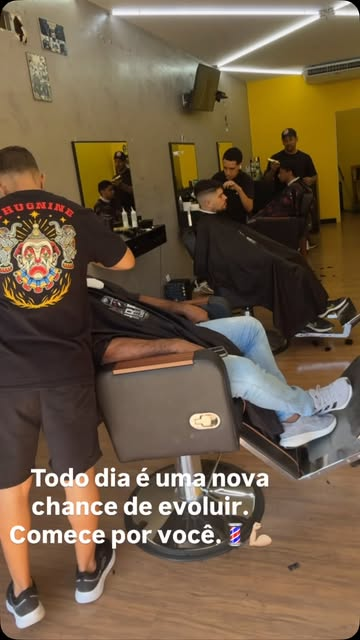
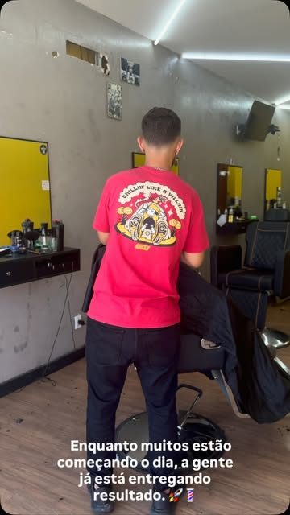
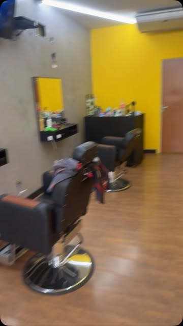

Clube Barba Ilimitada
R$ 59,90 /mês
Uso ilimitado do item coberto nos dias de funcionamento.
Uma barbearia de presença local, linguagem próxima e assinatura como principal chamada comercial. Amarelo, preto e branco conectam a fachada à comunicação digital.
Identidade observadaPropostas sinalizadas
O logo sozinho destaca metal e vermelho. A fachada e a campanha revelam o amarelo como cor essencial da experiência da marca. Os códigos abaixo são referências digitais, não especificações oficiais.
#FFC603Amostra recorrente da arte; não oficial#000000Normalização visual#202020Aproximação visual#FFFFFFNormalização visual#E5E3D4Aproximação visual do logo#92938EAproximação visual do logo#C82046Aproximação visual do logo

Logo coletado em 1157 × 1157 px, com fundo. Não há vetor ou versão transparente. Lettering alto, condensado e decorativo; fonte exata não identificada. Para o site, a proposta é Barlow Condensed nos títulos e Inter no corpo, com Montserrat como alternativa de títulos. Não são fontes oficiais confirmadas.
Ver análise e fontes tipográficasUso ilimitado do item coberto nos dias de funcionamento.
Uso ilimitado do item coberto nos dias de funcionamento.
Uso ilimitado do item coberto nos dias de funcionamento.
Fonte: AppBarber. A arte anuncia ausência de fidelidade; regras completas de renovação e cancelamento ainda precisam de confirmação.
| Serviço | Preço público | Agenda |
|---|---|---|
| Barba | Consultar | 30 min |
| Cera Nariz | Consultar | 30 min |
| Cera Orelha | Consultar | 30 min |
| Corte | R$ 40,00 | 30 min |
| Corte + Barba | R$ 70,00 | 60 min |
| Corte Tesoura | R$ 50,00 | 60 min |
| Nevou | Consultar | 30 min |
| Pé do Cabelo | Consultar | 30 min |
| Raspagem Cabeça Inteira maq ou navalha | R$ 30,00 | 30 min |
| Reflexo | Consultar | 30 min |
| Sobrancelha | Consultar | 30 min |
| Tintura Barba | Consultar | 30 min |
| Tintura Cabelo | Consultar | 30 min |
| Produto | Preço público |
|---|---|
| Água | R$ 2,00 |
| AMOSTRA PERFUME | R$ 70,00 |
| Balm para barba | R$ 54,90 |
| Cera finalizadora | R$ 29,90 |
| Cera modeladora incolor | R$ 29,90 |
| Cera modeladora UVA | R$ 29,90 |
| Cerveja Heineken | R$ 9,00 |
| Creme modelador EFEITO TEIA | R$ 29,90 |
| Gatorade | R$ 8,00 |
| Guaracamp | R$ 2,00 |
| KIT | R$ 154,90 |
| Minoxidil 15% | R$ 34,90 |
| Óleo para barba | R$ 54,90 |
| Pasta BLACK premium | R$ 29,90 |
| Pasta modeladora PREMIUM | R$ 29,90 |
| Perfume Árabe | R$ 120,00 |
| Perfume Árabe G | R$ 380,00 |
| Pó modelador | R$ 44,90 |
| Refri Lata | R$ 6,00 |
| Shampoo ANTICASPA | R$ 14,90 |
| Shampoo ANTIQUEDA | R$ 14,90 |
| Shampoo ESCURECEDOR | R$ 14,90 |
| Shampoo para barba | R$ 64,90 |
Nomes preservados como cadastrados. Estoque, composição e disponibilidade não verificados.
Amostra pública de 09/07 a 03/10/2026: 10 reels, um carrossel e uma foto. A marca combina humor, autoestima, agradecimento à comunidade e oferta do clube. Não houve acesso aos stories completos ou métricas internas.
12 referências










Av. Visconde de Itaúna, 508
Jardim Primavera • Duque de Caxias/RJ
CEP 25214-415
(21) 97698-5317 • WhatsApp ↗
Agendamento no AppBarber ↗
Rota informada pela empresa ↗
Equipe cadastrada: Daniel, Gabriel, Luiz e Thiago.
Comodidades declaradas: Wi-Fi, estacionamento, acessibilidade e atendimento a crianças.Google: seg–sex 09h–20h; sáb 08h–20h; dom 09h–14h.
AppBarber: seg–sex 09h–12h e 13h–20h; sáb 08h–12h e 13h–20h; dom 09h–14h10 e 14h20–14h30.
Reputação: AppBarber exibia 5,0 e três avaliações. O Google mostrava convite à primeira avaliação. As fontes não são intercambiáveis.
Priorizar agendamento, serviços, clube, espaço, equipe e localização. A identidade deve manter a energia do amarelo/preto e a proximidade da fala, com leitura clara no celular.